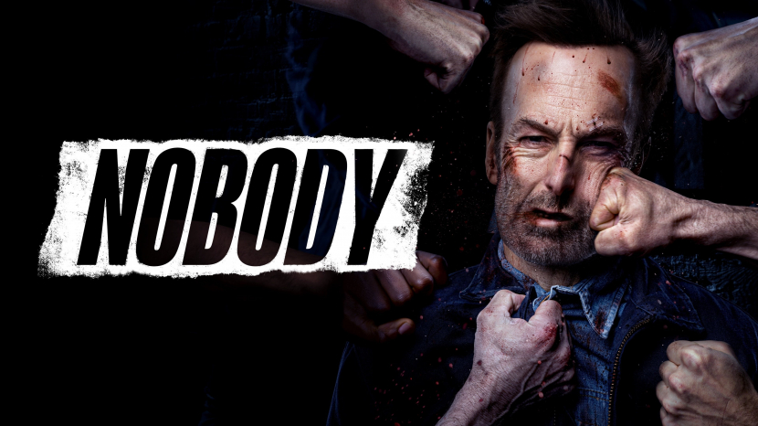
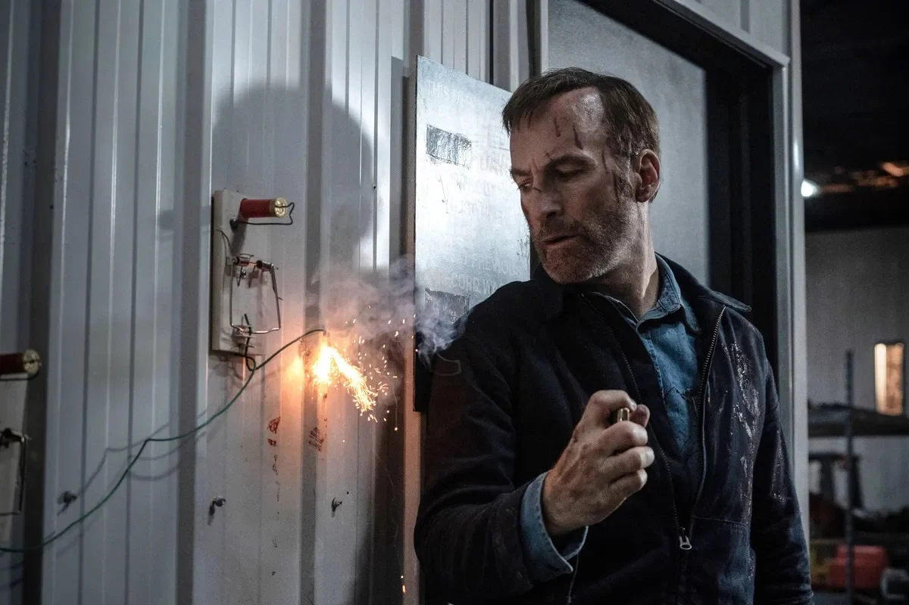
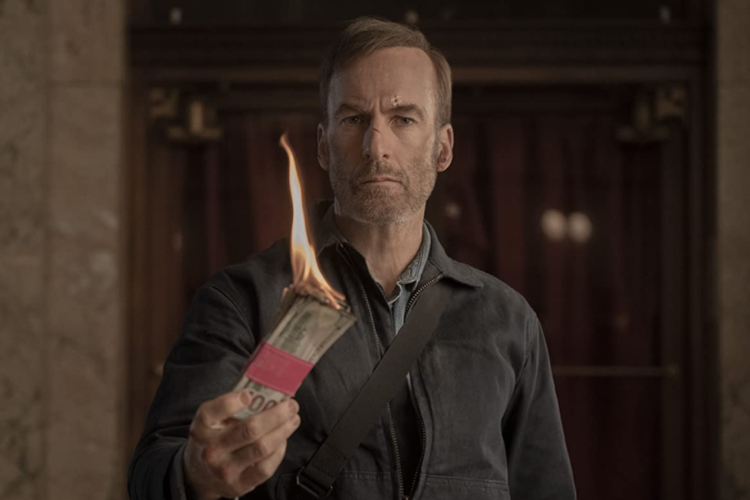
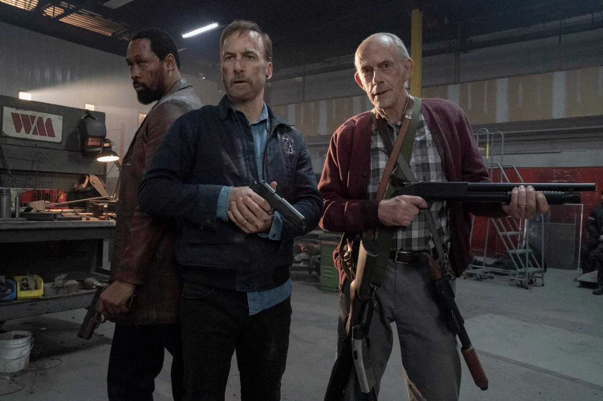
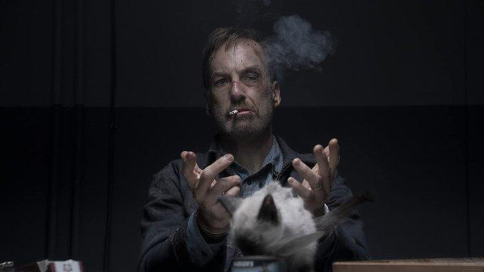

Pemenang Emmy Bob Odenkirk (Better Call Saul, The Post, Nebraska) berperan sebagai Hutch Mansell, ayah dan suami yang sering diremehkan dan diabaikan, namun Ketika dua pencuri masuk ke rumahnya di pinggiran kota pada suatu malam, Hutch menolak untuk membela diri atau keluarganya, berharap untuk mencegah kekerasan yang serius.



